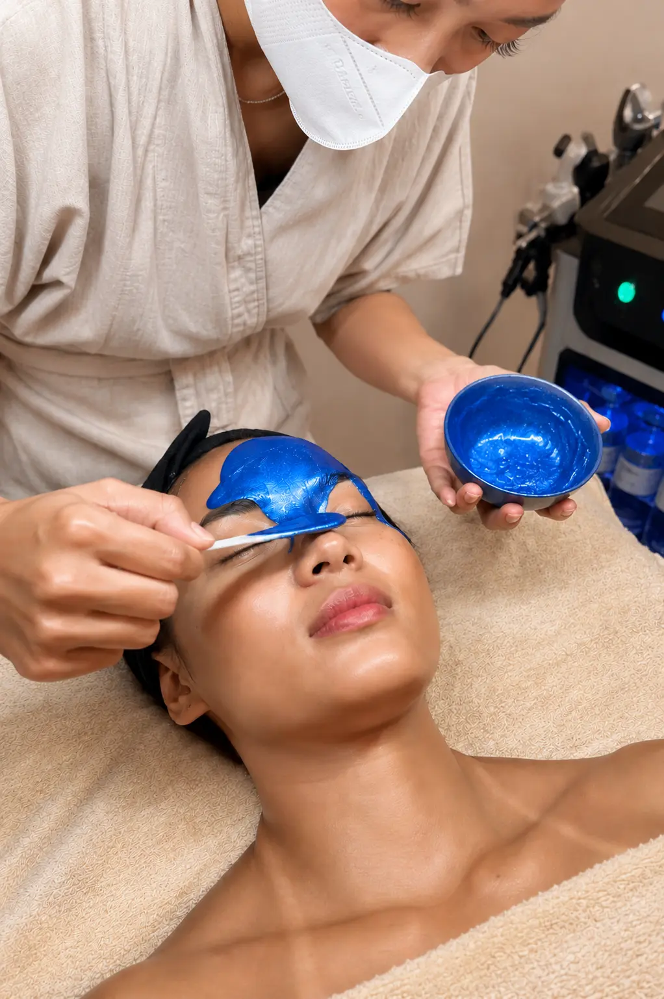

Skin concern · Uluwatu, Bali
Dehydrated Skin Facials in Uluwatu, Bali
Tight, dull, flaky — yet still oily? That is dehydration, the most common skin concern we see in Uluwatu. Our hydrating facials flood the skin with water and repair the barrier that keeps it in.

What is it?
Dehydration is a lack of water, not oil. It can affect every skin type — even oily skin. Dehydrated skin feels tight, looks dull, shows fine lines more and may over-produce oil to compensate. Dry skin, by contrast, lacks lipids and is a skin type rather than a temporary condition.
What causes it?
- Long-haul flights and cabin air
- Sun, wind and salt water
- Air-conditioned rooms day and night
- Over-cleansing or harsh, stripping products
- Not drinking enough water in the heat; alcohol
Why Bali makes it worse
Your skin is often already dehydrated when you land after a long flight. Then come strong sun, sea salt, wind on the scooter and nights in air-conditioning — a combination that pulls water out of the upper layers of the skin and weakens the barrier.
Our approach at POINT · FACE
We rehydrate on two levels: we infuse humectants (hyaluronic acid, snail mucin, aloe) deep into the skin with Hydrafacial and ultrasound, and we repair the barrier (centella, peptides, PDRN) so it holds that water. A HydroJelly mask seals everything in.
Recommended for you
Our treatments for dehydrated skin
-
 Book
Book01 · Best match
Ultimate Korean Glass Skin & Hydralift
Our signature: deep hydration and instant glass-skin glow.
80 min · IDR 1,300,000
-
 Book
Book02
PDRN Cellular Repair (Salmon DNA)
For dehydrated skin that is also sensitive or stressed — repairs the barrier.
60 min · IDR 1,300,000
-
Book
03
Hydrating Ritual — Rose & Aloe
A gentle, 100% natural hydrating ritual with aloe, rose and coconut oil.
45 min · IDR 790,000
-

Book04
Cryo Skin Reset
When dehydration comes with heat and redness after the sun.
60 min · IDR 1,050,000
Boost it with: HydroJelly — Egyptian Rose · Collagen Eye Patch — see add-ons.
Results
What to expect
- Straight afterSkin feels soft and comfortable; tightness disappears and the glow returns.
- First weekMake-up sits better and fine lines from dehydration are softened.
- After 3 sessionsA stronger barrier that keeps hydration longer.
At home
Daily care in Bali
- Apply hydrating serum on damp skin, then seal with a moisturiser
- Use a gentle, non-foaming cleanser
- Reapply SPF 50 and drink water regularly in the heat
- Mist your face and use a sheet mask after a flight
FAQ
Dehydrated Skin: your questions
Can oily skin be dehydrated?
Yes. Oily skin can lack water and over-produce oil to compensate. Hydration often helps rebalance shine.
Which facial is best for dehydrated skin in Bali?
For instant results, the Ultimate Korean Glass Skin & Hydralift. If your skin is also sensitive or sun-stressed, choose the PDRN Cellular Repair or Cryo Skin Reset.
Book · WhatsApp or Fresha
Ready for your glow?
Choose your studio in Uluwatu. A complimentary skin analysis is included with every treatment.